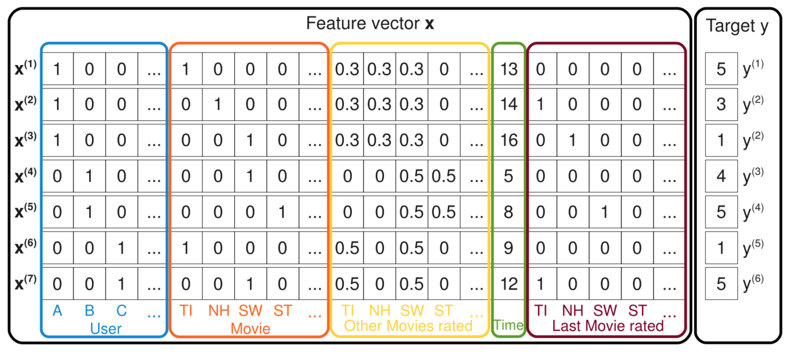

- 00 开篇词 用知识去对抗技术不平等.md.html
- 01 你真的需要个性化推荐系统吗_.md.html
- 02 个性化推荐系统有哪些绕不开的经典问题？.md.html
- 03 这些你必须应该具备的思维模式.md.html
- 04 画鬼容易画人难：用户画像的“能”和“不能”.md.html
- 05 从文本到用户画像有多远.md.html
- 06 超越标签的内容推荐系统.md.html
- 07 人以群分，你是什么人就看到什么世界.md.html
- 08 解密“看了又看”和“买了又买”.md.html
- 09 协同过滤中的相似度计算方法有哪些.md.html
- 10 那些在Netflix Prize中大放异彩的推荐算法.md.html
- 11 Facebook是怎么为十亿人互相推荐好友的.md.html
- 12 如果关注排序效果，那么这个模型可以帮到你.md.html
- 13 经典模型融合办法：线性模型和树模型的组合拳.md.html
- 14 一网打尽协同过滤、矩阵分解和线性模型.md.html
- 15 深度和宽度兼具的融合模型 Wide and Deep.md.html
- 16 简单却有效的Bandit算法.md.html
- 17 结合上下文信息的Bandit算法.md.html
- 18 如何将Bandit算法与协同过滤结合使用.md.html
- 19 深度学习在推荐系统中的应用有哪些_.md.html
- 20 用RNN构建个性化音乐播单.md.html
- 21 构建一个科学的排行榜体系.md.html
- 22 实用的加权采样算法.md.html
- 23 推荐候选池的去重策略.md.html
- 24 典型的信息流架构是什么样的.md.html
- 25 Netflix个性化推荐架构.md.html
- 26 总览推荐架构和搜索、广告的关系.md.html
- 27 巧妇难为无米之炊：数据采集关键要素.md.html
- 28 让你的推荐系统反应更快：实时推荐.md.html
- 29 让数据驱动落地，你需要一个实验平台.md.html
- 30 推荐系统服务化、存储选型及API设计.md.html
- 31 推荐系统的测试方法及常用指标介绍.md.html
- 32 道高一尺魔高一丈：推荐系统的攻防.md.html
- 33 和推荐系统有关的开源工具及框架介绍.md.html
- 34 推荐系统在互联网产品商业链条中的地位.md.html
- 35 说说信息流的前世今生.md.html
- 36 组建推荐团队及工程师的学习路径.md.html
- 加餐 推荐系统的参考阅读.md.html
- 结束语 遇“荐”之后，江湖再见.md.html
- 捐赠
14 一网打尽协同过滤、矩阵分解和线性模型
在上一篇文章中，我讲到了使用逻辑回归和梯度提升决策树组合的模型融合办法，用于CTR预估，我还满怀爱意地给这对组合起了个名字，叫做辑度组合，因为这对组合的确可以在很多地方帮到我们。
这对组合中，梯度提升决策树，也就是人们常说的GBDT，所起的作用就是对原始的特征做各种有效的组合，一棵树一个叶子节点就是一种特征组合。
这大概就是逻辑回归的宿命吧，作为一个广义线性模型，在这个由非线性组成的世界里，唯有与各种特征组合办法精诚合作，才能活下去。
从特征组合说起
对逻辑回归最朴素的特征组合就是二阶笛卡尔乘积，但是你有没有想过这样暴力组合的问题所在。
- 两两组合导致特征维度灾难；
- 组合后的特征不见得都有效，事实上大部分可能无效；
- 组合后的特征样本非常稀疏，意思就是组合容易，但是并不能在样本中找到对应的组合出现，也就没办法在训练时更新参数。
如果把包含了特征两两组合的逻辑回归线性部分写出来，就是：
\[\\hat{y} = \\omega_{0} + \\sum_{i=1}^{n}{\\omega_{i}x_{i}} + \\sum_{i=1}^{n}{\\sum_{j=i+1}^{n}{\\omega_{ij}x_{i}x_{j}}}\]
这和原始的逻辑回归相比，就多出来了后面那一大坨，特征两两组合那部分，也需要去学习对应的参数权重。
问题就是两两组合后非常有可能没有样本能够学习到 $w_{ij}，不但没有样本可以用来学习到参数，而且在应用时，如果遇到了这样的组合，也就只能放弃，因为没有学到权重。
针对这个问题，就有了一个新的算法模型：因子分解机模型，也叫做FM，即Factorization Machine。因子分解机也常常用来做模型融合，今天就和你聊聊因子分解机的来龙去脉。
FM模型
1.原理
因子分解机模型是在2010年被提出来的。因为逻辑回归在做特征组合时样本稀疏，从而无法学到很多特征组合的权重，所以因子分解机的提出者就想，能不能对上面那个公式中的\(w _{ij}\)做解耦，让每一个特征学习一个隐因子向量出来。
就好像前面讲矩阵分解时，为每一个用户和每一个物品各自都学习一个隐因子向量一样，这样一来，任何两个特征不小心在实际使用时相遇了，需要组合，那么各自掏出自己随身携带的隐因子变量做一个向量点积，就是两者组合特征的权重了。
还是针对逻辑回归的线性部分，用公式写一下更清楚：
\[\\hat{y} = \\omega_{0} + \\sum_{i=1}^{n}{\\omega_{i}x_{i}} + \\sum_{i=1}^{n}{\\sum_{j=i+1}^{n}{<V_{i}, V_{j}>x_{i}x_{j}}}\]
这个公式和前面特征组合的公式相比，不同之处就是原来有个 \(w_{ij}\)，变成了这里的两个隐因子向量的点积 \(<V_{i}, V_{j}>\)。
不要小看这个变化。它其实认为两个特征之间，即使没有共同出现在一条样本中，也是有间接联系的。比如说特征A和特征B曾在一些样本中一起出现过，特征B和特征C曾在一些样本中出现过，那么特征A和特征C无论是否在样本中一起出现过，仍然是有些联系的。
如果在实际预测CTR时，特征A和特征C真的在一起出现了，如果你用的是因子分解机模型，这时候你的预测程序就不慌不忙走向数据库，从中取出早已准备好的特征A和特征C的隐因子向量，拿出来做一个点积运算，就得到了两者组合的权重。
也许逻辑回归见到这一切不禁要问：居然还有这种操作？是的，因子分解机的先进之处就在于此。
现在聪明如你，一定也想到了，既然二阶特征组合可以学到隐因子向量，那么三阶特征组合也可以加进来，四阶，五阶……想一想是不是有点小激动？不要急，组合越多，计算复杂度就会陡增，所以一般在实际使用中，因子分解机就表演到二阶特征组合就OK了。
2模型训练
因子分解机的参数学习并无特别之处，看目标函数，我在这里是把它当作融合模型来看的，用来做CTR预估，因此预测目标是一个二分类，因子分解机的输出还需要经过sigmoid函数变换：
\[\\sigma(\\hat{y}) = \\frac{1}{1+e^{-\\hat{y}}}\]
因此，损失目标函数也就是常用的logistic loss：
\[ loss(\\theta)= -\\frac{1}{m}\\sum_{i=1}^{m}{\[y^{(i)}log(\\sigma(\\hat{y}))+(1-y^{(i)})log(1-\\sigma(\\hat{y}))\]} \]
公式中 \(\\sigma(\\hat{y})\) 是因子分解机的预测输出后经过sigmoid函数变换得到的预估CTR， \(y^{(i)}\) 是真实样本的类别标记，正样本是1，负样本是0，m是样本总数。
对这个损失目标函数使用梯度下降或者随机梯度下降就可以得到模型的参数，和前面文章里的没有区别，注意损失函数实际上还需要加上正则项，这在上一篇专栏中已经总结过机器学习损失函数的两板斧，就是偏差和方差。
3预测阶段
假如现在已经得到了因子分解机的模型参数，你忍不住跃跃欲试想端着它冲上战场，且慢，因子分解机中二阶特征组合那一坨，在实际计算时，复杂度有点高，如果隐因子向量的维度是k，特征维度是n，那这个复杂度就是\(O(kn^2)\)，其中n方是特征要两两组合，k是每次组合都要对k维向量计算点积。需要对此稍微做一下改造，改造过程如下：
\[- \\begin{aligned}- \\sum_{i=1}^{n}\\sum_{j=i+1}^{n}{<V_{i}, V_{j}>x_{i}x_{j}}={}& \\frac{1}{2}\\sum_{i=1}^{n}\\sum_{j=1}^{n}{<V_{i}, V_{j}>x_{i}x_{j}} - \\frac{1}{2}\\sum_{i=1}^{n}{<V_{i}, V_{j}>x_{i}x_{i}} \\- &=\\frac{1}{2}(\\sum_{i=1}^{n}\\sum_{j=1}^{n}\\sum_{f=1}^{k}{v_{i,f}v_{j,f}x_ix_j}-\\sum_{i=1}^{n}\\sum_{f=1}^{k}{v_{i,f}v_{i,f}x_ix_i}) \\- &=\\frac{1}{2}\\sum_{f=1}^{k}((\\sum_{i=1}^{n}{v_{i,f}x_i})(\\sum_{j=1}^{n}v_{j,f}x_j)-\\sum_{i=1}^{n}{v_{i,f}^2x_i^2}) \\- &=\\frac{1}{2}\\sum_{f=1}^{k}{((\\sum_{i=1}^{n}{v_{i,f}x_i})^2-\\sum_{i=1}^{n}{v_{i,f}^2x_i^2})}- \\end{aligned}- \]
看上去这个有点复杂，你如果不想理解也没关系，我直接告诉你最后该怎么算。
loop1 begin: 循环k次，k就是隐因子向量的维度，其中，循环到第f次时做以下事情
loop2 begin:循环n个特征，第i次循环时做这样的事情
1. 从第i个特征的隐因子向量中拿出第f维的值
2. 计算两个值：A是特征值和f维的值相乘，B是A的平方
loop2 end
把n个A累加起来，并平方得到C，把n个B也累加起来，得到D
用C减D，得到E
loop1 end
把k次循环得到的k个E累加起来，除以2
这就是因子分解机中，二阶组合部分的实际计算方法，现在这样做的复杂度只是O(kn)，原来的平方复杂度不见了。
4.一网打尽其他模型
下面继续带你见识一些因子分解机的神奇之处。看下面这张图，这里示意了一批样本。

这张图中每一条样本都记录了用户对电影的评分，最右边的y是评分，也就是预测目标；左边的特征有五种，用户ID、当前评分的电影ID、曾经评过的其他分、评分时间、上一次评分的电影。
好，现在我们来看因子分解机如何一网打尽其他模型的，注意，这里说的一网打尽并不是打败，而是说模型可以变形成其他模型。
前面已经说了因子分解机可以实现带有特征组合的逻辑回归。
现在假设图中的样本特征只留下用户ID和电影ID，因子分解机模型就变成：
\[\\hat{y} = \\omega_{0} + \\omega_{u} + \\omega_{i} + <V_{u}, V_{i}>\]
解释一下如何变成这样的。因为用户ID和电影ID，在一条样本中，各自都只有一个维度是1，其他都是0，所以在一阶部分就没有了求和符合，直接是wu和wi，二阶部分特征乘积也只剩下了一个1，其他都为0了。你瞧，这不就是带有偏置信息的SVD吗？
现在继续，在SVD基础上把样本中的特征加上用户历史评过分的电影ID，再求隐因子向量，这就是SVD++呀！
再加上时间信息，就变成了time-SVD。
所以因子分解机是把我之前讲过的矩阵分解一网打尽了，顺便还干起了逻辑回归的工作，也正因如此，因子分解机常常用来做模型融合，在推荐系统的排序阶段肩负起对召回结果做重排序的任务。
5.FFM
因子分解机的故事已经讲完，但我后来在因子分解机基础上改进了一下。改进的思路是：不但认为特征和特征之间潜藏着一些不可告人的关系，还认为特征和特征类型有着千丝万缕的关系。
这个特征类型，就是某些特征实际上是来自数据的同一个字段，比如用户ID，占据了很多维度，变成了很多特征，但他们都属于同一个类型，都叫“用户ID”。这个特征类型就是字段，即Field。这种改进叫做Field-aware Factorization Machines，简称FFM。
再回顾一下，因子分解机模型的样子是这样：
\[\\hat{y} = \\omega_{0} + \\sum_{i=1}^{n}{\\omega_{i}x_{i}} + \\sum_{i=1}^{n}{\\sum_{j=i+1}^{n}{<V_{i}, V_{j}>x_{i}x_{j}}}\]
之前因子分解机认为每个特征有一个隐因子向量，FFM改进的是二阶组合那部分，改进的模型认为每个特征有f个隐因子向量，这里的f就是特征一共来自多少个字段（Field），二阶组合部分改进后如下：
\[ \\sum_{i=1}^{n}{\\sum_{j=i+1}^{n}{<V_{i,fj}, V_{j,fi}>x_{i}x_{j}}} \]
FFM模型也常用来做CTR预估。在FM和FFM事件过程中，记得要对样本和特征都做归一化。
总结
今天，我给你介绍了另一种常用来做CTR预估的模型，因子分解机。因子分解机最早提出在2010年，在一些数据挖掘比赛中都取得了很好的乘积，后来被引入工业界做模型融合，也表现不俗。严格来说，因子分解机也算是矩阵分解算法的一种，因为它的学习结果也是隐因子向量，也是用过隐因子向量的点积代替原来的单个权重参数。
最后，由于不断提到特征组合的重要性，前有GBDT，现有FM，都是在特征组合上花功夫，你能不能在这里分享一下，你所用过的特征组合办法有哪些呢？欢迎留言一起讨论。-

© 2019 - 2023 Liangliang Lee. Powered by gin and hexo-theme-book.